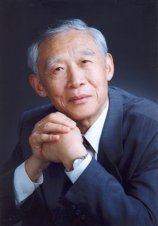
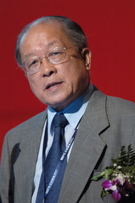
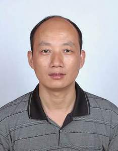

专家团队

高级顾问 陈国良院士
-
中国科学院院士，中国科学技术大学教授，深圳大学计算机与软件学院院长，博士生导师，哈尔滨工业大学深圳研究生院兼职博导，天津工业大学荣誉教授。
-
曾先后主持完成了10多项国家863计划、国家攀登计划、国家自然基金、教育部博士基金等科研项目。

高级顾问 汪懋华
-
中国农业大学教授，中国工程院院士、国际欧亚科学院院士。汪懋华长期从事农业现代化研究。1978年，在汪懋华努力下，北京农业机械化学院成立了自动化研究室，这是中国农业高等院校第一个自动化实验室。1988年，他带领研究生在中国率先研制成功微电脑孵化机控制器，随后又发展成为二级分布式孵化厅控制系统。20世纪90年代中期，汪懋华根据国际农业工程的发展趋势，带领自己团队将学科发展方向定位在“精细农业”智能信息技术与系统集成研究这个全新领域。他在中国率先传播了这一技术思想，科学地介绍了发达国家迅速发展中的相关工程科技与系统集成技术的研究进展，促进和直接参与组织了在中国精细农业示范应用的早期实践。
-
2006年，因对国际农业工程科技事业和职业活动做出了杰出的贡献，汪懋华获国际农业工程协会会士荣誉称号。2013年11月3日，获“中国农业机械发展终身荣誉奖”。

高级顾问 魏珉
-
1987年考入山东农业大学园艺系蔬菜专业，1994年硕士毕业留校任教，1997-2000年攻读南京农业大学蔬菜学博士学位，2002-2004年在沈阳农业大学园艺学博士后流动站从事博士后研究，2006-2008年受JSPS资助在日本千叶大学从事博士后研究。现为国际园艺学会会员，中国园艺学会设施园艺分会理事，中国农业工程学会高级会员、设施园艺工程专业委员会委员，山东省蔬菜协会常务理事，山东省现代蔬菜产业技术体系岗位专家。
高级顾问 蔡英明
-
1984年毕业于山东农业大学，山东寿光市一边倒果树研究所所长；山东绿色富硒食品委员会资深专家；山东潍坊市科技致富万人培训主讲；
山东星火科技服务首席专家和主讲；
中国果菜实用技术首席专家和主讲；
中国科学家论坛特约科学家；
中国首届合作社论坛发起人之一；
从事教育、科研、生产二十多年。